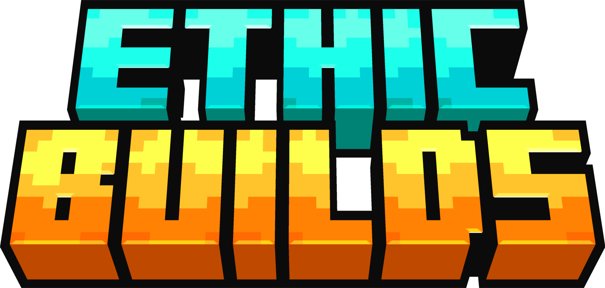

Konvertierung von .schem Dateien zu .schematic
Repository https://github.com/EthicBuilds/schemtoschematic
Forked from https://github.com/PureGero/SchemToSchematic
Datenschutz: Alle hochgeladenen Dateien bleiben auf dem lokalen PC und werden in keinem Fall
weitergegeben.